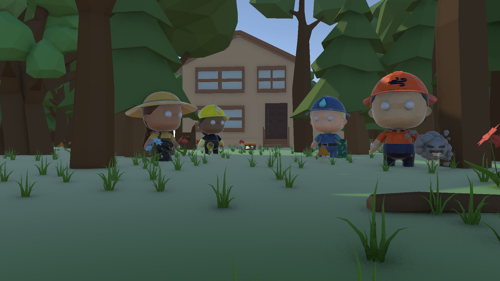
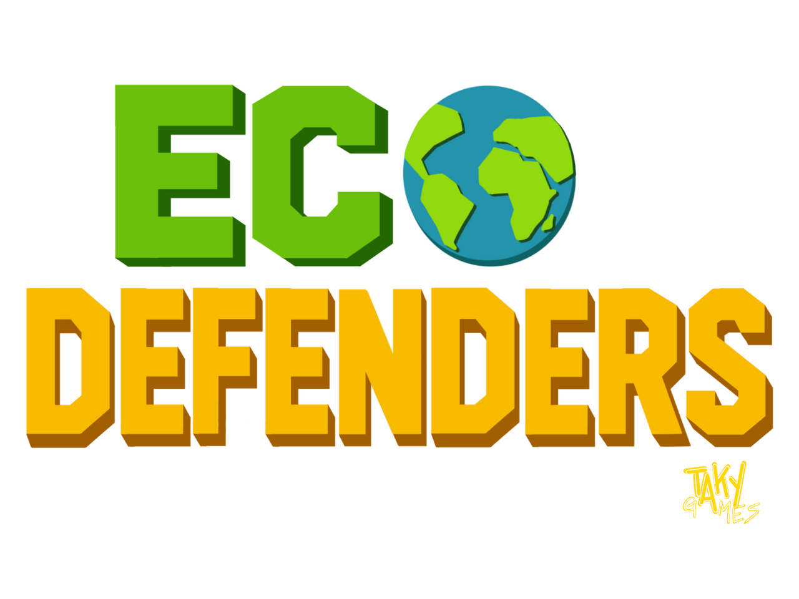
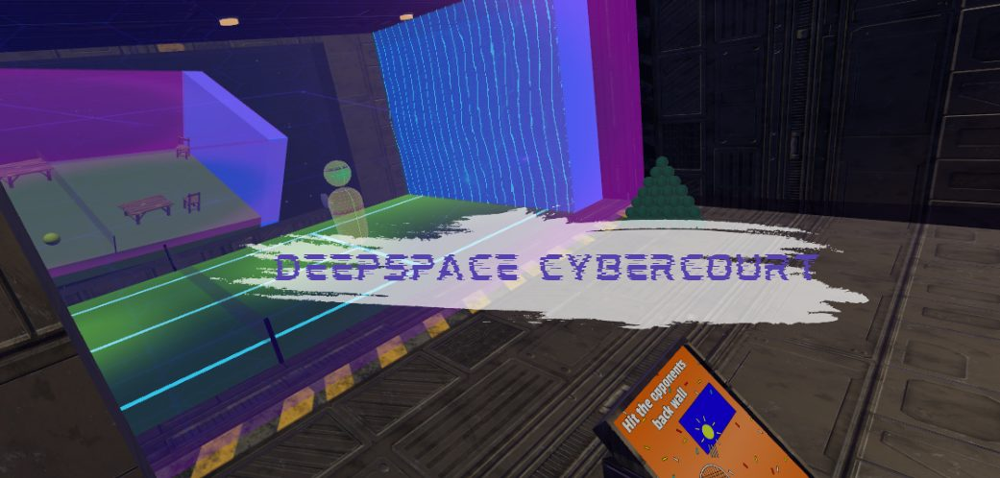
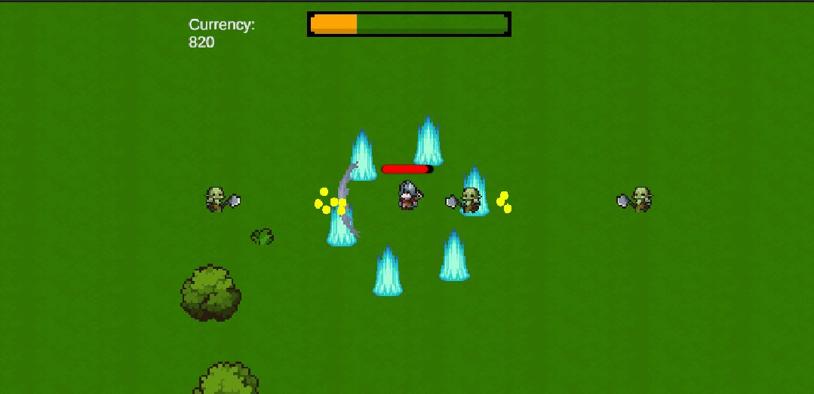
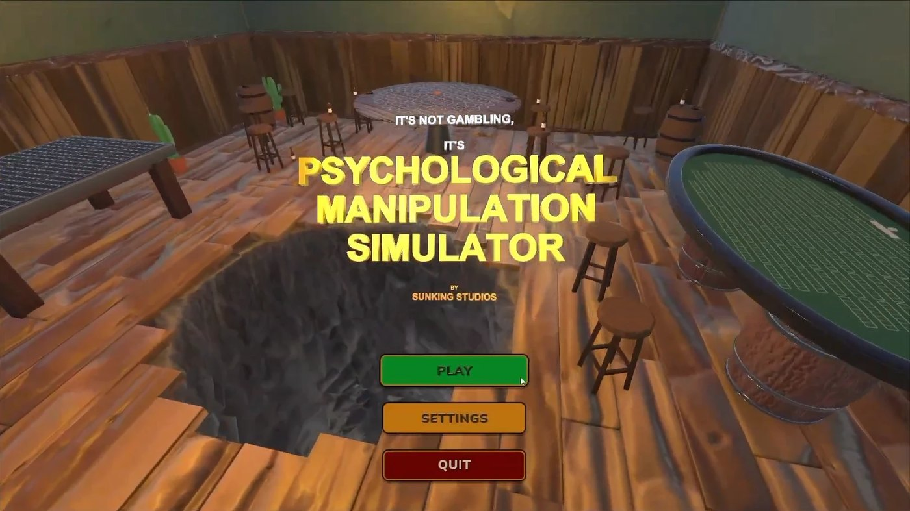

ゲームプランナー / デザイナー志望Aspiring Game Planner / Designer
Yusei Nakajima
説明ではなく、プレイヤーの選択で伝わるゲームをつくる。I design games that teach through the player's choices, not through explanation.
Queensland University of Technologyでゲームデザインを専攻する3年生(2026年12月卒業予定)。企画書・試作書の作成から、Unity / C#でのプロトタイプ実装、プレイテストによる改善まで一貫して担当しています。
Third-year Game Design student at Queensland University of Technology, graduating December 2026. I take ideas from planning and prototype documents through Unity / C# implementation and playtest-driven iteration.

注目作品:ECO DEFENDERSFeatured: ECO DEFENDERS 教育タワーディフェンスEducational tower defense 詳しく見る →Read more →- 担当領域Focus
- 企画 / システム / UI設計Planning / Systems / UI
- 実装Implementation
- Unity / C#
- チーム制作Teamwork
- 4〜8人の多国籍チームMulticultural teams of 4–8
- 卒業予定Graduation
- 2026年12月December 2026
01 — Works
制作物Selected Works
各作品ページでは、企画資料、制作プロセス、ゲームプレイ映像、スクリーンショットを掲載しています。一部の作品ではプレイアブルビルドも公開しています。
Each project page includes design documents, development processes, gameplay videos, and screenshots. Playable builds are available for selected projects.

ECO DEFENDERS
建設業の職人をヒーローにした教育タワーディフェンス。安価だが代償のある進化と、高価だが持続可能な進化を選ばせ、10〜12歳がサステナビリティを自分の判断として体験します。
An educational tower-defense game built around construction trades. Players aged 10–12 choose between cheap upgrades with a long-term cost and expensive sustainable ones, so sustainability becomes their own decision.
担当:My role: 企画・GDD / アップグレード分岐設計 / UI情報設計 / C#実装Concept & GDD / upgrade-branch design / UI information design / C# implementation
詳細を見る →View Details →
Deepspace Cybercourt
車椅子VRテニスから進化したSFラケットスポーツ。
A sci-fi racket sport that evolved from a wheelchair VR tennis pitch.
担当:My role: ラケットのSFX/VFX、物理調整、グリップ操作の実装Racket SFX/VFX, physics tuning, grip-input coding
詳細を見る →View Details →
Hollowstead
チャームと使い魔で強くなるローグライト・サバイバル。
A rogue-lite survival game built around charms and familiars.
担当:My role: チャーム/スキルの考案とコーディング実装Charm/skill ideas and their implementation
詳細を見る →View Details →
Psychological Manipulation Simulator
運任せのゲームの「やめられなさ」を題材にしたアイドル・クリッカー。
An idle clicker about the pull of games of chance.
担当:My role: サウンドデザイン、報酬設計Sound design, reward design
詳細を見る →View Details →02 — Principles
考え方と進め方Principles & Process
大切にしていることWhat I hold to
-
PRINCIPLE 1
プレイヤーは自分ではないThe player is not me
面白いかどうかは、自分の感覚ではなくプレイテストで観察したことで判断します。ECO DEFENDERSでは「Eco-Pointがスコアだと思った」という一言から、メニューUIを作り直しました。
I judge fun by what I observe in playtests, not by my own taste. In ECO DEFENDERS, one tester saying “I thought Eco-Points were the score” led me to rebuild the menu UI.
-
PRINCIPLE 2
伝えたい体験を一つに絞るOne experience, clearly
要素を足すより、プレイヤーに一番感じてほしいことを先に決め、それ以外を削ります。説明画面ではなく、選択そのものに意味を持たせます。
Before adding features, I decide the one thing the player should feel and cut what distracts from it. Meaning lives in the choices, not in explanation screens.
-
PRINCIPLE 3
早く試して、直し続けるTest early, keep fixing
完璧を待たずに紙プロトタイプや小さなビルドで確かめ、届いた声をもとに改善を重ねます。
Rather than waiting for perfect, I test with paper prototypes and small builds, then keep improving from what players tell me.
進め方How I work
-
STEP 1
企画書・アイデア書Concept & idea documents
ブリーフを分析し、遊びの核と切り口を言葉にする。
Analyse the brief and put the core of play and the angle into words.
-
STEP 2
試作書・紙プロトタイプPrototype docs & paper prototypes
実装前に、選択肢の見せ方とルールを検証する。
Test rules and how choices are presented before writing code.
-
STEP 3
Unity / C# 実装Unity / C# implementation
仕様を自分の手でプロトタイプに落とし込む。
Turn the specification into a working prototype myself.
-
STEP 4
プレイテスト・改善Playtesting & iteration
意図が画面で伝わったかを確かめ、UIを直す。
Check whether the intent reads on screen, then fix the UI.
03 — About
自己紹介About Me
Queensland University of TechnologyのBachelor of Games and Interactive Environmentsでゲームデザインを専攻する3年生です。ゲームプランナーとして企画、仕様設計、UI/UX設計に取り組み、少人数チームではUnityとC#を用いた実装も担当してきました。多国籍チームでのゲーム制作を通じて、プレイヤー視点の面白さと実装可能性を両立させることを大切にしています。
I am a third-year Game Design student in the Bachelor of Games and Interactive Environments at Queensland University of Technology. As a game designer and planner, I have worked on concept development, game specifications, and UI/UX design. In small teams, I have also implemented features using Unity and C#. Through working in multicultural teams, I have learned to balance engaging player experiences with practical development constraints.
できることSkills
- ゲーム企画・仕様書Game Design & Documentation
- システムデザインSystems Design
- プロトタイピングPrototyping
- プレイテスト・改善Playtesting & Iteration
使用ツールTools
- Unity
- C#
- Git / GitHub
- Python
- Figma
- Audacity
- 氏名NameYusei Nakajima
- 所属AffiliationQueensland University of Technology
- 専攻MajorゲームデザインGame Design
- 卒業予定Graduation2026年12月Expected Dec 2026
- 就職希望職種Seeking Roleゲームプランナー / デザイナーGame Planner / Designer
- 得意分野Focus Areas企画 / システムデザイン / プロトタイピングGame Planning / Systems Design / Prototyping
04 — Contact
一緒にゲームをつくりませんか。Let's make games together.
採用のご相談、ポートフォリオへのご感想など、お気軽にご連絡ください。
Hiring enquiries and feedback on this portfolio are both welcome.
yugo59077@gmail.com